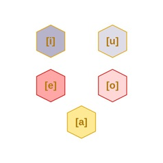

Luku 1. Aakkoset
Nykykreikan aakkosissa on 7 vokaalimerkkiä ja 17 konsonanttimerkkiä.
| Iso kirjain | Pieni kirjain | Nimi | Äännearvo |
|---|---|---|---|
| Α | α | άλφα | [a] |
| Β | β | βήτα | [v] |
| Γ | γ | γάμα | [γ] |
| Δ | δ | δέλτα | [δ] |
| Ε | ε | έψιλον | [e] |
| Ζ | ζ | ζήτα | [z] |
| Η | η | ήτα | [i] |
| Θ | θ | θήτα | [θ] |
| Ι | ι | γιώτα | [i] |
| Κ | κ | κάπα | [k] |
| Λ | λ | λάμδα | [l] |
| Μ | μ | μι | [m] |
| Ν | ν | νι | [n] |
| Ξ | ξ | ξι | [ks] |
| Ο | ο | όμικρον | [o] |
| Π | π | πι | [p] |
| Ρ | ρ | ρω | [r] |
| Σ | σ, ς | σίγμα | [s] |
| Τ | τ | ταυ | [t] |
| Υ | υ | ύψιλον | [i] |
| Φ | φ | φι | [f] |
| Χ | χ | χι | [χ] |
| Ψ | ψ | ψι | [ps] |
| Ω | ω | ωμέγα | [o] |
Se, miten kirjainmerkit äännetään, oppii parhaiten nykykreikan oppikirjoista, joissa on mukana äänitykset. Tai voi käydä IPA:n sivustolla katsomassa foneemien ääntämykset.
Yllä olevat merkit eivät riitä kuvaamaan kaikkia kreikan kielen äänteitä, jotka on esitetty alla olevassa taulukossa.
| Bilabiaali | Labiodentaali | Dentaali | Alveolaari | Palataali | Velaari | |
|---|---|---|---|---|---|---|
| Nasaali | m | n | ŋ | |||
| Klusiili | p, b | t, d | k ɡ | |||
| Affrikaatta | ps | ts, dz | ks | |||
| Frikatiivi | f, v | θ, ð | s, z | x ɣ | ||
| Approksimantti | j | |||||
| Tremulantti | r | |||||
| Lateraali | l | |||||
Yksittäisten konsonanttimerkkien lisäksi on digrafeja, kahden merkin yhdistelmiä, joilla kuvataan konsonanttifoneemeja: μπ, ντ, γκ, τσ, τζ.
Digrafeja käytetään myös kuvaamaan yksittäisiä vokaaliäänteitä: αι, ει, οι, υι, ου.
Äänteelle [j] ei ole omaa kirjainmerkkiään, vaan käytetään samaa merkkiä kuin äänteelle [γ]: γαμμα äännetään [j] etuvokaalien [e] ja [i] edellä. Äännettä [e] kuvataan 2:lla ja äännettä [i] 6:lla eri tavalla, joten γαμμα-kirjainta voi seurata 8 eri kirjainyhdistelmää, jotka kaikki voivat kuvata [j]-äännettä. Tästä enemmän palatalisaatiossa.
Alla olevassa taulukossa on esitetty kreikan äänteet sekä mitä eri kirjainmerkkejä niitä kuvaamaan käytetään.
| Äännearvo | Iso kirjain - Pieni kirjain |
|---|---|
| [a] | Α-α |
| [b], [mb] | Μπ-μπ |
| [d], [nd] | Ντ-ντ |
| [δ] | Δ-δ |
| [e] | Ε-ε, Αι-αι |
| [f] | Φ-φ |
| [γ] | Γ-γ |
| [g], [ŋ], [ŋg] | Γκ-γκ, γγ |
| [θ] | Θ-θ |
| [χ] | Χ-χ |
| [i] | Ι-ι, Η-η, Υ-υ, Ει-ει, Οι-οι, Υι-υι |
| [j] | γ + etuvokaali |
| [k] | Κ-κ |
| [l] | Λ-λ |
| [m] | Μ-μ |
| [n] | Ν-ν |
| [o] | Ο-ο, Ω-ω |
| [p] | Π-π |
| [ps] | Ψ - ψ |
| [r] | Ρ-ρ |
| [s] | Σ-σ-ς |
| [t] | Τ-τ |
| [ts] | ΤΣ - τς |
| [u] | Ου-ου |
| [v] | Β-β |
| [ks] | Ξ - ξ |
| [z] | Ζ-ζ |
| [dz] | ΤΖ - τζ |
1.1. Konsonantit
1.1.1. μπ, ντ, γκ
Κreikan kieltä on kirjoitettu antiikin ajoista lähtien, ja sanojen kirjoitusasu halutaan pitää lähellä muinaista versiota, vaikka niiden ääntäminen on muuttunut aikojen kuluessa.
Esimerkiksi β oli aikoinaan [b], δ oli [d], ja γ oli [g]. Mutta ajan myötä β > [v], δ > [δ], ja γ > [γ]. Tarvittiin uudet merkit ilmaisemaan [b], [d] ja [g] -äänteitä. Kehitettiin digrafit: μπ, ντ ja γκ.
Kirjainyhdistelmä μπ merkitsee aina [b] sanan alussa, ja [mb] sanan sisällä.
μπύρα [bíra] "olut" λάμπα [lámba] "lamppu" αμπέλι [ambéli] "viinirypäle"
Palatalisoitunut äännetään [bʝ]:
κουμπιά [kumbʝá] "nappeja"
Lainasanoissa on [b]:
τουρμπίνα [turbína] "turbiini" μπαμπάς [babás] "isi" (sanan alussa [b] ja sisällä myös [b])
Kirjainyhdistelmä μπτ merkitsee [mt].
Πέμπτη [pémti] "Torstai" άκαμπτος [ákamtos] "taipumaton" σύμπτωμα [símtoma] "oire"
Kirjainyhdistelmä ντ merkitsee aina [d] sanan alussa, ja [nd] sanan sisällä.
ντροπή [dropí] "häpeä" ντίσκο [dísko] "disko" ντομάτα [domáta] "tomaatti" ντουβάρι [duvári] "seinä"
πέντε [pénde] "viisi" ποντίκι [pondíki] "hiiri"
Palatalisoitunut äännetään [dʝ]:
γάντια [γándʝa] "hansikkaat"
Lainasanoissa on [d]:
φίλντισι [fíldisi] "norsunluu" ντίζελ [disel] "dieselmoottori" νταντά [dadá] "lastenhoitaja" ([d] sanan alussa ja sisällä)
Kirjainyhdistelmä γκ äänetään aina [g] sanan alussa, ja [ŋg] sanan sisällä.
γκάφα [gáfa] "kommellus"
αγκάθι [aŋgáθi] "piikki, oka" Πανκράτι [paŋgráti] (Kaupunginosa Ateenassa) αγκαλιά [aŋgaʎá] "halaus" αγκώνας [aŋgónas] "kyynärpää" όγκος [óŋgos] "tilavuus"
Palatalisoituneena äännetään [ɉ], [ŋɉ]:
άνκυρα [aŋɉira] "ankkuri" γκέμι [ɉémi] "suitset" μπαγκέτα [baɉéta] "tahtipuikko"
Kuitenkin lainasanoissa äännetään [g]:
αργκό [argó] "slangi" Γκόγκολ [gógol] "Gogol (kirjailija)" ([g] sanan alussa ja sisällä)
Kirjainyhdistelmä γγ esiintyy vain sanan keskellä ja äännetään [ŋg].
εγγονός [eŋgonós] "lapsenlapsi" φεγγάρι [feŋgári] "kuu" Αγγλία [aŋglía] "Englanti" αγγίζω [aŋɉízo] "koskettaa" (palatalisoitunut) συγγενής [siŋɉenís] "sukulainen" (palatalisoitunut)
Joskus morfeemien välissä äännetään [ŋγ], [ŋj].
συγγνώμη tai συγνώμη [siγnómi] "anteeksi" (ei äännetä [ŋg] eikä [g]) έγγαμος [éŋγamos] "naimissa" συγγραφέας [siŋγraféas] "kirjailija" εγγενής [eŋjenis] "synnynnäinen" (palatalisoitunut)
γχ äännetään [ŋχ].
άγχος [áŋχos] "huoli" συγχωρώ [siŋχoró] "antaa anteeksi" συγχαρητήρια [siŋχaritíria] "onneksi olkoon" σύγχρονος [síŋχronos] "samanaikainen" συγχώνευσι [siŋχónefsi] "yhdistäminen" λογχίζω [loŋçízo] "seivästää" (palatalisoitunut)
1.1.2. τσ, τζ
Kirjainyhdistelmä τσ äännetään [ts]. Kirjainyhdistelmä τζ äännetään [dz].
τσάντα [tsánda] "käsilaukku" κατσίκι [katsíki] "vuohi"
τζάμι [dzámi] "ikkunalasi" τζατζίκι [dzadzíki] "tzatziki" τζάκι [dzáki] "tulisija"
Sanan sisällä vokaalin jälkeen lisätään n [ndz]:
νερατζούλα [nerandzúla] "pomeranssi"
Tavutus:
γάντζος = γάν-τζος καλικάντζαρος = καλικάν-τζαρος μπρούντζος = μπρούν-τζος
1.1.3. ψ, ξ
Toisaalta on kirjainmerkkejä, joilla kuvataan kahta äännettä: ξ, ψ.
Kirjainyhdistelmä πσ kirjoitetaan kaikkialla ψ.
Mutta τσιπς "sipsi" (lainasana).
Kirjainyhdistelmä κσ kirjoitetaan ξ paitsi kun kyseessä on etuliite εκ: έξω, άξιος, mutta εκστρατεία.
Mutta ettei asia olisi liian yksinkertainen, niin εκ > εξε prefiksoiduissa verbeissä: εκβάλλω > εξέβαλα, εξέβαλλα.
1.1.4. Palatalisaatio
| Bilabiaali | Labiodentaali | Dentaali | Alveolaari | Post-alveolaari | Palataali | Velaari | |
|---|---|---|---|---|---|---|---|
| Nasaali | ɲ̟ | ||||||
| Klusiili | c ɟ | ||||||
| Affrikaatta | |||||||
| Frikatiivi | ç ʝ | ||||||
| Approksimantti | |||||||
| Tremulantti | |||||||
| Lateraali | ʎ |
Konsonantit [k, g, χ, γ] äännetään liudentuneina, palatalisoituina, jos niitä seuraa etuvokaali [e] tai [i], ja ilman palatalisaatiota, jos niitä seuraa takavokaali.
Gamma ääntyy [γ] takavokaalin edessä ja [ʝ] etuvokaalin edessä.
γάλα [γála] "maito" γιατί [ʝatί] "miksi"
χ-äänteessä kuten saksan ach ja ich.
χορός [χorós] "tanssi" (ei palatalisoitu) χοίρος [çíros] "sika" (palatalisoitu)
Ks. lisää luvusta palatalisaatio.
1.1.5. Kaksoiskonsonantit
Kaksoiskonsonantteja esiintyy vain kirjoituksessa, ei koskaan puheessa: ββ, κκ, λλ, μμ, νν, ππ, ρρ, σσ, ττ.
Σάββατο [sávato] "lauantai" εκκλησία [eklisía] "kirkko" αλληγορία [aliγoría] "allegoria" άλλος [álos] "toinen, muu" πρόγραμμα [próγrama] "ohjelma" άμμος [ámos] "hiekka" Άννα [ána] (Naisen nimi) γεννώ [ʝenó] "synnyttää" παππούς [papús] "isoisä" άρρωστος [árostos] "sairas" θάλασσα [θálasa] "meri" περιττός [peritós] "ylimääräinen" ευφορία [eforía] "hedelmällisyys" Εύβοια [evía] "Euboia"
1.1.6. σίγμα (σ) ja σίγμα τελικό (ς)
Σίγμα σ käytetään sanan alussa ja sisällä. Σίγμα τελικό ς käytetään sanan lopussa: σκύλος
1.2. Vokaalit
Vokaaleja kreikassa on viisi: [a,e,i,o,u].

Vokaalit vastaavat äännearvoltaan pitkälti suomen vokaaleja. Kirjoitusmerkkejä niitä varten on kuitenkin enemmän kuin tarvittaisiin, jälleen siksi että aikojen kuluessa niiden ääntämys on muuttunut.
Osa kirjoitetaan yhdellä merkillä, osa kahdella. Samaa äännettä voidaan kirjoittaa monella tavalla.
| Iso kirjain | Pieni kirjain | Äännearvo |
| Α | α | [a] |
| Ε | ε | [e] |
| Η | η | [i] |
| Ι | ι | [i] |
| Ο | ο | [o] |
| Υ | υ | [i] |
| Ω | ω | [o] |
Lisäksi on tapauksia, joissa kreikka käyttää kahta kirjainta ilmaisemaan yhtä vokaaliäännettä:
| Digrafi | Äännearvo | Esimerkki | Merkitys |
| αι | [e] | και | "ja" |
| ει | [i] | κλείνει | "sulkee" |
| οι | [i] | οίκος | "talo" |
| ου | [u] | όπου | "missä" |
| υι | [i] | υιοθετώ | "adoptoida" |
[i] voidaan kirjoittaa kuudella eri tavalla: ι, η, υ, ει, οι, υι.
παιδί [peδí] "lapsi" Ελένη [eléni] (Naisen nimi) πολύ [polí] "paljon" κάνει [káni] "tekee" κόποι [kópi] "vaivannäkö" υιοθέτω [ioθéto] "adoptoida"
[e] voidaan kirjoittaa kahdella eri tavalla: ε, αι.
λένε [léne] "sanovat" κλαίνε [kléne] "itkevät"
[ο] voidaan kirjoittaa kahdella eri tavalla: ο, ω.
δώρο [δóro] "lahja"
[u] kirjoitetaan kahdella merkillä: ου.
παιδιού [peδʝú] "lapsen" ουρά [urá] "jono" του βουνού [tu vunú] "vuoren".
1.3. Diftongit
Diftongit ovat nykykreikassa hieman sekava ilmiö. Oppikirjat ja web-sivut lukevat diftongeiksi usein tapaukset jotka ovat digrafeja palatalisaation tuloksina.
Nykykreikassa ei aina voi varmuudella päätellä pelkän kirjoituksen pohjalta, onko jossakin sanassa diftongi vai kahden vokaalin yhdistelmä.
Diftongin sisältävät sanat pitää vain oppia erikseen.
Diftongit ovat kahden eri vokaalin yhdistelmä, jotka kuuluvat samaan tavuun.
Nykykreikassa ei diftongeja ole kuin kourallinen, mutta miksi näin on? Muinaiskreikassa diftongeja oli viljalti, mutta vuosisatojen kuluessa ne siloutuivat pois. Ne kirjoitetaan edelleen kuten ennenkin kahdella vokaalimerkillä, mutta niiden äännearvo oli nyt monoftongi (αι, ει, οι, υι, ου) tai vokaali+frikatiivi (αυ, ευ).
Samalla prosessit, jotka tuottivat kyseisiä äänteitä sananmuodostuksessa, seurasivat mukana. Lopputuloksena oli, ettei uusia diftongeja enää syntynyt.
Kyllä nykykreikassa on edelleen yhdistelmiä [a] + [i], [e] + [i], [o] + [i], [a] + [u], [e] + [u]. [o] + [u], mutta kreikkalaisten kielitajussa ne eivät enää ole diftongeja, vaan kahden vokaalin yhdistelmiä. Lopputulemana on, että tällaiset vokaaliyhdistelmät jaetaan kirjoituksessa eri tavuihin.
Niinpä kreikkalaiset lujasti ovat sitä mieltä, että jos vokaaliyhtymä päättyy [u]:hun, kyseessä ei ole diftongi. Melkein yhtä lujasti he ovat sitä mieltä, että jos vokaaliyhtymä päättyy [i]:hin, kyseessä ei ole diftongi. Jäljelle jää kourallinen sanoja, joissa heidän mielestään diftongi on säilynyt.
Koska nykykreikan omat prosessit eivät enää tuota diftongeja, tuleeko kieleen mistään uusia diftongeja tilalle? Kyllä ja ei. Kun kreikan kielen puhujat joutuvat kosketuksiin muunkielisten kulttuurien kanssa, kieleen ilmestyy diftongeja lainasanojen myötä. Pieni ongelma on vain, että kreikan kielen puhujat ymppäävät uudet sanat olemassaoleviin prosesseihin, jotka eivät diftongeja tunnista, ja saattavat taivuttaa uudetkin sanat ikään kuin ne eivät olisi diftongeja.
Nykykreikan tavutussäännöt eivät auta tunnistamaan aitoja diftongeja valediftongeista.
Koska diftongit kuuluvat samaan tavuun, niitä ei tavutuksessa eroteta toistaan.
Mutta diftongien lisäksi nykykreikka pitää samassa tavussa myös digrafit ja palatalisaation tuotamat äänneyhtymät:
-
αίμα > αί-μα (digrafi)
-
βαριέμαι > βα-ριέ-μαι (palatalisaatio)
-
νεράιδα > νε-ράι-δα (diftongi)
Diftongien hahmottamista ei helpota sekään, että sama vokaalifoneemi voidaan kirjoittaa usealla eri tavalla: [i] kuudella (ι, η, υ, ει, οι, υι), [e] kahdella (ε, αι), ja [o] kahdella (ο, ω).
Alla käytetystä transkriptiosta: Jos esim. [a] ja [i] kuuluvat samaan diftongiin, transkriptio on [ai̯]. Jos ne kuuluvat eri tavuihin, mutta sattuvat vain olemaan rinnakkain, transkriptio on [ai].
1.3.1. Digrafit ja diftongit
Miten diftongit erottaa kirjoituksessa digrafeista αι, ει, οι, υι, ου, sekä kirjainyhdistelmistä αυ, ευ?
Tarvitaan painomerkki τόνος ja treema διαλυτικά, sekä tieto siitä, missä kohtaa sanapaino on.
Jos tavulla on paino, digrafeissa painomerkki sijoitetaan jälkimmäisen merkin päälle: αί, εί, οί, υί, ού. Samoin αύ, εύ.
αί-μα, πεί-ρα, οί-κος, α-κού-ω, ναύ-της, δου-λεύ-ει
Diftongeissa painomerkki sijoitetaan ensimmäisen merkin päälle: άι, όι.
νε-ράι-δα, ρόι-δι.
Jos painoa ei ole diftongin sisältävällä tavulla käytetään treemaa, joka laitetaan [i] foneemia kuvaavan merkin päälle: αϊ, οϊ.
αϊ-τός, βοϊ-δά-κι.
Mutta näin ei aina ole. Vaikka painomerkki ja treema olisivatkin käytössä, voidaan sana silti tavuttaa vokaalien välistä eikä kyseessä ole diftongi.
πλάι ei ole diftongi vaan tavutetaan πλά-ι. λαϊκή ei ole diftongi vaan tavutetaan λα-ϊ-κή.
Jos painomerkki on jälkimmäisen vokaalimerkin päällä, kyseessä ei ole diftongi. Tällöin pitää myös käyttää treemaa:
Esim. σαΐτα [saíta] > σα-ΐ-τα. Ei voi olla diftongi. Jos kyseessä olisi diftongi, paino olisi σάιτα tai σαϊτά.
Samasta syystä nämä eivät voi olla diftongeja:
παΐδι [paíδi] > πα-ΐ-δι "kylkiluu" σεΐχης [seíçis] > σε-ΐ-χης "sheikki" ευφυΐα [efiía] > ευ-φυ-ΐ-α "äly" αλδεΰδη [aldeídi] > αλ-δε-ΰ-δη "aldehydi" ταΐζουν [taizun] > τα-ΐ-ζουν "ruokkivat" καΐκι [kaíci] > κα-ΐ-κι "kalastusvene" φαΐ [faí] > φα-ΐ "ruoka"
1.3.2. Palatalisaatio ja diftongi
Palatalisoiva vokaali on yleensä [i]. Se sulautuu edelliseen konsonanttiin ja aiheuttaa sen palatalisaation > [ʝ, ç, c, ʎ, ɲ].
Palatalisaatio aiheuttaa sen, että sitä seuraavat vokaalit katsotaan kuuluvaan samaan tavuun:
σπιτιού [spitçú] > σπι-τιού "talon" αγοριού [agorʝú] > α-γο-ριου "pojan" σταχυού [staxçú] > στα-χιού "tuhkan" ποταμιού [potamɲú] > πο-τα-μιού "joen" κάποιου [kápçu] > κά-ποιου "jonkun" άδειου [áδʝu] > ά-δειου "tyhjän" εργαλειού [erγaʎú] > ερ-γα-λειού "työkalun" τέτοιους [tetçus] > τέ-τοιους "tuollaisia" φύκια [fíca] > φύ-κια "merilevä" άπιαστος [ápçastos] > ά-πια-στος "tavoittamaton" αγκαλιά [aŋgaʎá] > α-γκα-λιά "syleily" βιασύνη [vʝasíni] > βια-σύ-νη "kiire" βαριέμαι [varʝéme] > βα-ριέ-μαι "kyllästyä" γεννιέμαι [ʝenʝéme] > γεν-νιέ-μαι "syntyä" ίδιος [íδʝος] > ί-διος ηλικιωμένος [ilicioménos] > η-λι-κιω-μέ-νος "ikääntynyt" στρατιώτης [stratçótis] > στρα-τιώ-της "sotilas" θειάφι [θçáfi] > θειά-φι "rikki" δουλειά [δuʎá] > δου-λειά "työ" άδειες [áδʝes] > ά-δειες "tyhjät (mon.f.)" άδειος [áδʝos] > ά-δειος "tyhjä" άδειων [áδʝon] > ά-δειων "tyhjien" γυαλί [ʝalí] > γυα-λί "lasi" μυαλό [mɲaló] > μυα-λό "mieli" δυο [δʝo] > δυο "kaksi" κάποια [kápça] > κά-ποια "joku (f.)" όποιος [ópços] > ό-ποιος "kuka tahansa joka" όποιες [ópçεs] > ό-ποιες "ketkä tahansa jotka (f)" όποιων [ópçon] > ό-ποιων "keiden tahansa jotka"
Jos [i] ei kuulu samaan tavuun kuin seuraava vokaali, se on tavua muodostava eikä diftongi.
βιβλίο [vivlío] > βιβ-λί-ο "kirja" σημασίες > ση-μα-σί-ες "merkitykset" περιέχει > πε-ρι-έ-χει "sisältää" ιδιαίτερος iδi̯éteros] > ι-δι-αί-τε-ρος "erityinen" καθεστηκυία [kaθesticía] > κα-θε-στη-κυί-α "yhteyskuntaluokkajärjestys" ουσιαστικό [usiastikó] > ου-σι-α-στι-κό "substantiivi" συνδυασμός [sinδiazmós] > συν-δυ-α-σμός "yhdistelmä" δίκτυα [δíktia] > δί-κτυ-α "verkostot" έγκυος [énɉios] > έ-γκυ-ος "raskaana" κυοφορώ [cioforó] > κυ-ο-φο-ρώ "olla raskaana" αλληλέγγυων [aliléŋɉion] >αλ-λη-λέγ-γυ-ων "solidaarisuutta osoittavien" δικτυώνω [δiktióno] > δι-κτυ-ώ-νω "verkostua"
Sanan alussa [i] tavutetaan erilleen seuraavasta vokaalista. (Äännetään [ʝ] ?)
υιός [iós] > υι-ός, tätä nykyä γιος "poika" υιοθετώ [ioθetó] > υι-ο-θε-τω "adoptoida" υιοθεσία [ioθesía] > υι-ο-θε-σί-α "adoptio" ίαμβος [íamvos] > ί-αμ-βος "jambi" Ιανουάριος [ianuários] > Ι-α-νου-ά-ρι-ος, kansankielellä Γενάρης ιερό [ieró] > ι-ε-ρό "pyhäkkö" Ιωάννης [ioánis] > Ι-ω-άν-νης, kansankielellä Γιάννης ιώτα [ióta] > ι-ώ-τα, kansankielellä γιώτα (kirjaimen nimi) ιατρός [iatrós] > ι-α-τρος, kansankielellä γιατρός "lääkäri"
1.3.3. Diftongin estäviä seikkoja
Jos kahden vokaalin väliin tulee morfologinen raja, esim. prepositio, prefiksi tai yhdyssana, kyseessä ei ole diftongi, ja tavutuskin näyttää sen.
προϋπόθεση [proipóθesi] > προ-ϋ-πό-θε-ση "edellytys" προϋπάρχω [proipárχo] > προ-ϋ-πάρ-χω "olla olemassa ennen" προΐσταμαι [pɾoístame] > προ-ΐ-στα-μαι "olla esimies" προηγούμενος [proiγúmenos] > προ-η-γού-με-νος "edellinen" καταπραΰνω [katapraíno] > κα-τα-πρα-ΰ-νω "rauhoittaa" του ζώου [zo-u] "eläimen" ξεϋφαίνω [kseiféno] > ξε-ϋ-φαί-νω "esittelen" εννοέι [enoí] > εν-νο-εί "tarkoittaa" άυλος [áilos] > ά-υ-λος "aineeton" άυπνος [áipnos] > ά-υ-πνος "uneton" αϋπνία [aipnía] > α-ϋ-πνί-α "unettomuus"
1.3.4. Aidot diftongit
Nykykreikan diftongit löytyvät nousevien diftongien joukosta.
Nämä tapaukset ovat teoriassa mahdollisia: [ai] [au] [ei] [eu] [oi] [ou].
[ai] näkyy kirjoituksessa α + ι, η, ει, οι
[ai] voi olla diftongi nykykreikassa.
Jos tavu on painollinen α saa painomerkin.
τσάι [tsai̯] "tee" νεράιδα [nerái̯da] > νε-ράι-δα "merenneito" γάιδαρος [γái̯daros] > γάι-δα-ρος "aasi" χάιδεμα [χái̯dema] > χάι-δε-μα "hyväily"
Mutta nämä eivät ole diftongeja:
Μάιος [máios] > Μά-ι-ος "toukokuu" νάιλον [náilon] > νά-ι-λον "nailon" πλάι [plái] > πλά-ι "vieressä"
Jos painoa ei ole diftongin sisältävässä tavussa käytetään tremaa, joka laitetaan [i] foneemia kuvaavan merkin päälle.
αϊτός [ai̯tós] > αϊ-τός "kotka" χαϊδεύω [χai̯δévo] > χαϊ-δεύ-ω "paijata" μαϊντανός [mai̯danós] > μαϊ-ντα-νός "persilja" μαϊμού [mai̯mú] > μαϊ-μού "apina" καϊμάκι [kai̯máci] > καϊ-μά-κι "kerma"
Mutta nämä eivät ole diftongeja:
πλαϊνός [plainós] > πλα-ϊ-νός "viereinen" μωσαϊκό [mosaikó] > μο-σα-ϊ-κο "mosaiikki" αρχαϊκός [arxaikós] > αρ-χα-ϊ-κός "muinainen" παϊδάκι [paiδáci] πα-ϊ-δά-κι "kylkiluu" λαϊκή [laicí] > λα-ϊ-κή "kansan-"
αη voi olla diftongi:
αηδόνι [ai̯δóni] > αη-δό-νι "satakieli" κελαηδώ [kelai̯δó] > κε-λαϊ-δώ "visertää" καημός [kai̯mós] > καη-μός "suru, huoli" καημένος [kai̯ménos] > καη-μέ-νος "parka"
Mutta nämä taas eivät ole diftongeja:
αηδής [aiδís] > α-η-δής "inhottava" αηδία [aiδía] > α-η-δί-α "inho" νταηλίκι [dailíci] > ντα-η-λί-κι "uhmakkuus" άηχος [áixos] > ά-η-χος "kaiuton" κάηκε [káice] > κά-η-κε "paloi"
αειθαλής [aiθalís] > α-ει-θα-λής "ikivihreä" αείποτε [aípote]> α-ει-πό-τε "kaikkialla" φαεινός [fainós] > φα-ει-νός "loistava"
αοιδός [aiδós] > α-οι-δός "laulaja"
[au] näkyy kirjoituksessa αου.
[au] ei näyttäisi olevan diftongi.
Kreikkalaiset mielivät laittaa tavurajan vokaalien väliin. Joskin horjuntaa voi olla eri kielenkäyttäjien välillä.
φλάουτο > φλά-ου-το "huilu" φράουλα [fráula] > φρά-ου-λα tai φράου-λα "mansikka"
Lainasanat ovat rajamailla, mutta kotiutuessaan kreikan kieleen, niitäkin koskee sama tavutussääntö.
καουτσούκ [kautsúk] > κα-ου-τσούκ "kautsukki" μπαούλο [baúlo] > μπα-ού-λο "kirstu" άουτ [áut] > ά-ουτ "out" κολαούζο [kolaúzo] > κο-λα-ού-ζο "kierretyökalu" καουμπόι [kaubói] > κα-ου-μπό-ι "cowboy" πάουντερ [páuder] > πά-ου-ντερ "puuteri" ράουλο [ráulo] > ρά-ου-λο "rouleau" φάουλ [fául] > φά-ουλ "foul" σάουνα [sáuna] > σά-ου-να "sauna" τζάουλ [dzául] > τζά-ουλ "joule"
[oi] näkyy kirjoituksessa ο, ω + ι, η.
[oi] voi olla diftongi nykykreikassa.
Jos tavu on painollinen ο saa painomerkin.
βόιδι [vói̯δi] > βόι-δι "nautaeläin" ρόιδι [rói̯δi] > ρόι-δι "granaattiomena" εσκιμώικος [escimόi̯kos] > εσ-κι-μώι-κος "eskimo-"
Nämä taas eivät ole diftongeja:
ρολόι [rolói] > ρο-λό-ι "kello" σόι [sói] > σό-ι "suku" κομπολόι [kombolói] > κο-μπο-λό-ι "rukousnauha"
εγωισμός [eγoizmós] > ε-γω-ι-σμός "egoismi" ζωικός [zoikós] > ζω-ι-κός "eläimen-" πρωινός [proinós] > πρω-ι-νός "aamiais-"
Jos painoa ei ole diftongin sisältävässä tavussa käytetään tremaa, joka laitetaan [i] foneemia kuvaavan merkin päälle.
κοροϊδεύω [koroi̯δévo] > κο-ροϊ-δεύ-ω "pilkka" βοϊδάκι [voi̯δáki] > βοϊ-δά-κι "härkänen" βοϊδολάτης [voi̯δolátis] > βοϊ-δο-λά-της "lehmipaimen"
Nämä taas eivät ole diftongeja:
ευνοϊκός [evnoikós] > ευ-νο-ϊ-κός "suopea" οϊμέ [oimé] > ο-ϊ-μέ "oivoi" προϊόν [proión] > προ-ϊ-όν "muona" μποϊκοτάρω [boikotáro] > μπο-ϊ-κο-τά-ρω "boikotoida" παρανοϊκός [paranoikós] > πα-ρα-νο-ϊ-κός "paranoidi"
οη voi olla diftongi.
βοηθώ [voi̯θó] > βοη-θώ "auttaa"
Nämä taas eivät ole diftongeja:
νόημα [nóima] > νό-η-μα "merkitys" επιρροή [epiroí] > ε-πιρ-ρο-ή "vaikutus" χλόη [xlói] > χλό-η "ruoho" πνοή [pnoí] > πνο-ή "hengitys" γοητεύω [γoitévo] > γο-η-τε-ύω "lumota" γοητεία [γoitía] > γο-η-τεί-α "viehätys" ακοή [akoí] > α-κο-ἠ "kuulo"
πρώην [próin] > πρώ-ην "ex-"
[ou] näkyy kirjoituksessa οου
[ou] näyttäisi esiintyvän vain lainasanoissa eikä se ole diftongi.
κλόουν [klóun] > κλό-ουν "klovni, pelle" κρόουλ [króul] > κρό-ουλ "krooli" μπόουλιγκ [bóuliŋg] >μπό-ου-λιγκ "bowling" μπαγκαλόου [báŋgalóu] > μπα-γκα-λό-ου "bungalo" σόου "[sóu] > σό-ου show"
[ei] näkyy kirjoituksessa ε + ι, η, υ.
[ei] ei näyttäisi olevan diftongi nykykreikassa.
Lainasanoissa voi olla diftongi:
πλέι [pléi̯] > πλέι "peli" γκέι [géi̯] > γκέι "gay" λέιζερ [léi̯zer] > λέι-ζερ "laser" μπέιζμπολ [béi̯zbol] > μπέιζ-μπολ "pesäpallo" τρέιλερ [tréi̯ler] > τρέι-λερ
βόλεϊ [vólei̯] > βό-λεϊ "lentopallo" χόκεϊ [χócei̯] > χό-κεϊ "jääkiekko" τρόλεϊ [trólei̯] > τρό-λεϊ "johdinauto"
Nämä eivät ole diftongeja:
θεϊκός [θeikós] > θε-ϊ-κός "jumalallinen"
Ei myöskään εη ole diftongi.
ελεήμων [eleímon] > ε-λε-ή-μων "armollinen" λεηλατώ [leilató] > λε-η-λα-τώ "ryöstää" αλεηλάτητος [aleilátitos] > α-λε-η-λά-τη-τος "koskematon" δέηση [δéisi] > δέ-η-ση "rukous" λεηλασία [leilasía] > λεη-λα-σί-α "ryöstö" ελέη [eléi] > ε-λέ-η "armot" μπέης [béis] > μπέ-ης "bey (turk.)"
εϋ ei ole diftongi.
αλδεϋδικής [aldeidikís] > αλ-δε-ϋ-δι-κής "aldehydi" βόλλεϋ [vólei] > βόλ-λε-ϋ "lentopallo" βεϋγκάν [veigán] > βε-ϋ-γκάν "vegaani"
[eu] näkyy kirjoituksessa εου.
[eu]:sta löytyy vain harvoja ehdokkaita diftongeiksi:
φέουδο [féuδo] > φέ-ου-δο "läänitys"
1.3.5. Diftongin estäviä seikkoja
Jos kahden vokaalin väliin tulee morfologinen raja, esim. prepositio, prefiksi tai yhdyssana, kyseessä ei ole diftongi, ja tavutuskin näyttää sen.
προϋπόθεση [pro-i-pó-θe-si] "edellytys" προϋπάρχω [pro-i-pár-χo] "olla olemassa ennen" προΐσταμαι [pro-í-sta-me] "olla esimies" προηγούμενος [proiγúmenos] > προ-η-γού-με-νος καταπραΰνω [ka-ta-pra-í-no] "rauhoittaa" του ζώου [zo-u] "eläimen" ξεϋφαίνω ξε-ϋ-φαί-νω "esittelen" εννοέι [enoí] > εν-νο-εί
1.3.6. αυ ja ευ eivät ole diftongeja
Kirjainyhdistelmät αυ, ευ ja ηυ eivät ole diftongeja, sillä jälkimmäinen osa on frikatiivi, ei vokaali. Antiikin kreikassa ne olivat diftongeja, mutta eivät enää nykykreikassa. Kuitenkin kreikkalaiset itse edelleen pitävät näitä diftongeina.
Kirjainyhdistelmissä αυ, ευ ja ηυ, υ saa äännearvon [v] jos seuraa soinnillinen konsonantti ja [f] jos seuraa soinniton konsonantti.
Jos tavu saa painon, se laitetaan jälkimmäisen merkin päälle.
αυτό [aftó] "tämä" ευτυχία [eftiχía] "onni" ευχαριστώ [efχaristó] "kiitos" αύριο [ávrio] "huomenna" θαύμα [θávma] "ihme" αυγό [avγó] "kananmuna" δουλεύω [δulévo] "tehdä työtä" Ευρώπη [evrópi] "Eurooppa"
ηυ-yhdistelmä on harvinainen > [if] tai [iv].
απαυδώ > απηύδησα [apívδisa] "kyllästyin" απευθύνω > απηύθυνα [apífθina] "osoittaa, kohdistaa" διευθύνω > διηύθυνα [δiífθina] "johtaa, ohjata" κατευθύνω > κατηύθυνα [katiífθina] "suunnata" ευρίσκω > ηύραν [ívran] "löytää" αυξάνω > ηυξημένος [ifksiménos] "lisääntynyt, kasvanut"